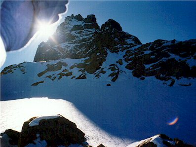
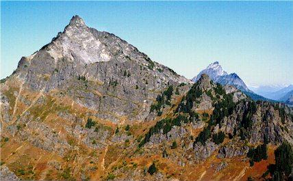
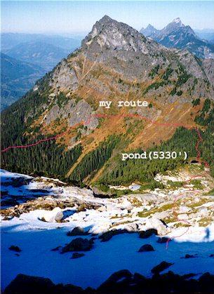
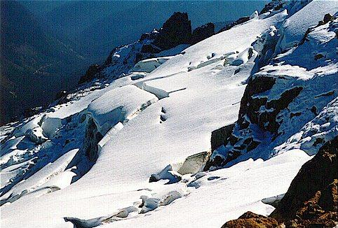
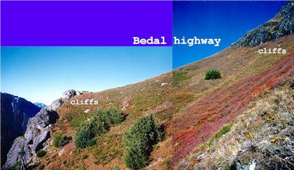
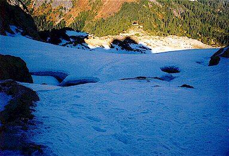

Sloan/Bedal Peak Explorations
I set out at 5:30 am from Redmond with a very light pack and my ice ax, determined to do something interesting around Sloan and Bedal Peaks. Maybe I’d climb Bedal Peak. Maybe I’d encircle one of them. Who knew? Not me! But the weather was good and the day ripe for the squeezing!
I finally decided to make for a pond in the saddle between the peaks at 5330 feet. The Washington Trails Association web site described two ways to get there. I picked the easier one, but it was still rough. 1700 feet up through forest, brush and heather that alternated between horrible and just about to become horrible.



Actually it wasn’t that bad. Let’s just say I aerated a lot of musty forest soil with the ice ax! I could usually climb over a downed mammoth tree with a solid patch of soil to sink the pick into. I used the compass to travel north and east, finally breaking out of the trees to beautiful red heather with cliffs above.
I worked south under the cliffs until a lower angle opening was found. Ready for some rock climbing, I moved into the cleft, ascending near a trickling stream. Enjoyable 4th class rock. Emerging onto heather above the cliff band, I continued traversing south towards the saddle. (From here I took the “Bedal highway” picture)
The sidehilling finally over, I hit the saddle about 100 feet too high and moved down to the lake. With no time to rest (it was about 10:15, I started the hike at 7:15 at 2800’) I decided to head up to the Sloan Glacier. My unspoken ambition to climb the peak and get down by dark were finally banished as I realized the scale of that undertaking! The peak continually receded behind intervening ridges, as the snow got thicker.
I traveled in an interesting mix of snow-covered heather and ice-coated rock. The ice always shattered when I used my pick, so I’d go around an easier way, taking my time in the empty park. The land really felt empty and quiet. That’s one of my favorite things: it’s like being a kid locked in a toy store at night…all yours!



![Sloan Peak from low in the Bedal valley][images/sloan2.jpg)Finally, I reached a large snowfield, crevassed at the bottom. I hesitated, thinking this might be the glacier. But I didn’t really believe that, and I started cautiously up. Soon the snow became very icy and I had to chop steps (no crampons). I became pretty nervous about the exposure and the snow conditions. Suddenly, the slope looked very steep. Using my compass I checked the angle: only 20 degrees. Oh.
I overcame my fear, reaching thicker snow and the end of the snowfield. As it turns out, it really was an “icefield,” as I found out at the moat separating the ice from snow-covered rock. I crossed and reached a plateau at 6660’ with a good view of the glacier. I’d had enough excitement, so this was my stopping point for the day. I was worried about descending the snow, so I didn’t stay long.
But I needn’t have worried…I enjoyed a wonderful glissade, finding better conditions to the left, and a good run-out into a bowl. I worked my way down to the pond for a drink. Then the heather (I went under all cliffs this time), then the forest, then the trail. Reached the car at 3:30 and drove home.